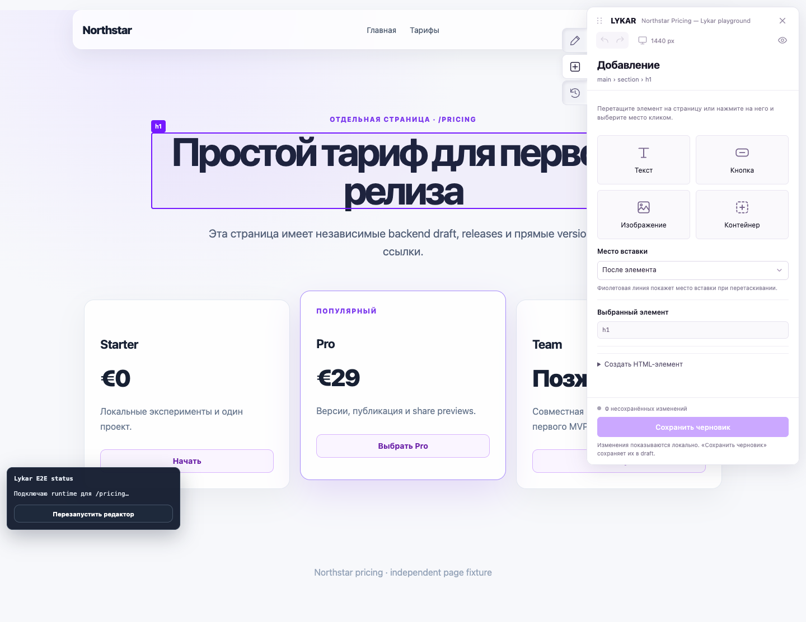
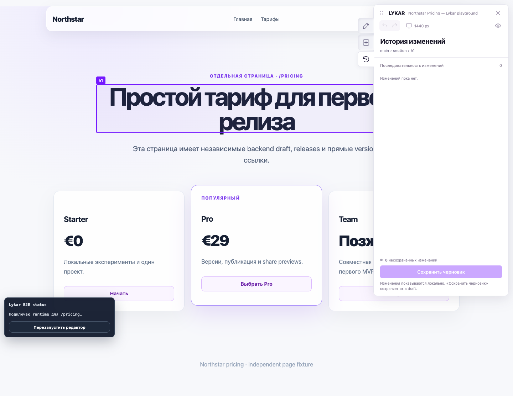
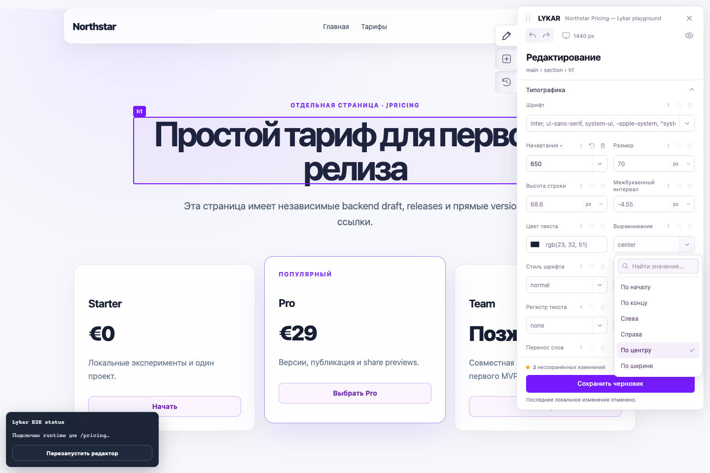
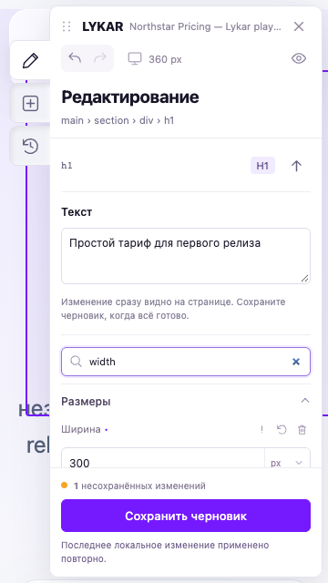

LYKAR / SERVICE-V1 / E1 · 3 октября 2026
Редактор принят.
Контракт сервиса — на согласовании.
Подтверждена текущая рабочая копия редактора. Готовность deployment, регистрации, писем и публичного сервиса этим отчётом не заявляется.
План эпика · Контракт и решения D01–D10
Граница принятого результата
- Edit/add/history, keyboard/select, pointer insertion, drag/cancel, preview, save/reload и сохранение ширины host.
- Reset, undo/redo, priority, in-flight save и ownership host styles; static и принятые React/Vue CSR и обычная hydration.
- Release/share, persistence recovery, SPA transitions и критические сценарии трёх браузеров.
Полный продуктовый regression эпика остаётся задачей 17. Это целевой editor baseline.
Идентификация дерева
HEAD e565328c339af5f12e488c37e0c972ae181d3dc9 + существовавшие незакоммиченные изменения. Манифест включает 277 tracked/untracked файлов исходного scope, включая новые panel/drag/select/style ownership файлы.
Финальный source SHA-256: 4aef7d15f25c94c4d44584edcda7d6ede780462e53d08c7511d86c7ebc6ebcd2. Before · After и метод hash · Исходный Git status.
В этой задаче изменены только пути evidence в трёх E2E suites: editor-design, style-editor-acceptance, style-matrix. Переменные LYKAR_EDITOR_SCREENSHOT_DIR и LYKAR_STYLE_SCREENSHOT_DIR сохраняют прежние defaults. Код приложения и пользовательские правки сохранены. Записанные первым прогоном S2-скриншоты перенесены в эту папку; исторические файлы восстановлены побайтно из HEAD (до прогона clean).
Проверки
| Слой | Результат | Команда / evidence |
|---|---|---|
| Build | PASS | npm run buildlog · command/timestamps |
| Typecheck | PASS | npm run typechecklog · command/timestamps |
| Unit | 223 PASS; 3 DB-only skip проверены отдельным API-прогоном | npm testlog · command/timestamps |
| API/PostgreSQL + HTTP smoke | 23/23 PASS; 0 skipped | npm run test:e2e:httplog · command/timestamps |
| Editor / static / React / Vue | 55/55 PASS; 0 failed, skipped, flaky | npx playwright test tests/e2e/editor-design.spec.ts tests/e2e/editor-style-reset.spec.ts tests/e2e/style-editor-acceptance.spec.ts tests/e2e/persistence-recovery.spec.ts tests/e2e/versioning-flow.spec.ts tests/e2e/s4-conditional-flow.spec.ts tests/e2e/s4-spa-critical.spec.ts tests/e2e/style-matrix.spec.ts --reporter=line,json,html --output=docs/verification/reports/SERVICE-V1/artifacts/2026-10-03-editor-baseline/browser-resultslog · command/timestamps |
| Повтор screenshot suites | 6/6 PASS | npx playwright test tests/e2e/style-editor-acceptance.spec.ts tests/e2e/style-matrix.spec.ts --project=chromium --reporter=line,json,html --output=docs/verification/reports/SERVICE-V1/artifacts/2026-10-03-editor-baseline/evidence-path-resultslog · command/timestamps |
| Typecheck E2E после правок harness | PASS | npm run typecheck:e2elog · command/timestamps |
Playwright HTML: 55 сценариев · Список тестов · Повтор: 6 сценариев · Окружение.
Последовательные прогоны, временная PostgreSQL 15.18, workers=1, retries=0. Node 22.23.1 / npm 10.9.8 / Playwright 1.63.0 / macOS arm64. Шесть повторов не прибавляются к уникальным 55. DB-only skip npm test покрыты API-прогоном; непроверенных обязательных skip в scope нет. Build/unit выполнены до правки путей screenshot; application sources не менялись, затронутые suites и E2E typecheck перепроверены. Test share/query tokens редактируются в сохранённых логах; production log safety проверяется отдельно в 13.
Размеры сборки и известное ограничение
| Артефакт | Raw bytes | Gzip bytes | Brotli bytes |
|---|---|---|---|
sdk.iife.js | 28725 | 8674 | 7691 |
index.js | 192296 | 40546 | 33490 |
runtime-core.iife.js | 81653 | 24331 | 21077 |
editor.iife.js | 276518 | 71977 | 60116 |
Legacy editor budget: FAIL. Editor 276518 raw bytes превышает старые 100000. Это открытое решение SERVICE-V1-02, а не утверждённое повышение лимита. Остальные прежние size/replay проверки проходят. Initial+lazy runtime: 110378 raw / 33005 gzip bytes, отдельно от bootstrap.
Replay p95: 14.738 ms (100 nodes / 25 operations), 57.896 ms (500 / 100), по 7 свежих jsdom документов; прежний предел 250 ms. Это локальный ориентир, не production SLA. Измерения и legacy FAIL · Скрипт.
| Browser | Selection p95 | Input p95 | Прежний UI budget |
|---|---|---|---|
| chromium | 17.5 ms | 34.1 ms | ≤50 ms — PASS |
| firefox | 11.0 ms | 17.0 ms | ≤50 ms — PASS |
| webkit | 25.0 ms | 42.0 ms | ≤50 ms — PASS |
1000 nodes, 5 warmup +30 samples; результаты/user agents. Отдельный test подтверждает отсутствие загрузки editor у native visitor.
Визуальная проверка
Исполнитель просмотрел screenshots: панель читаема, режимы различимы, mobile-вкладки и сохранение доступны, select остаётся в viewport. Keyboard/focus/drag проверены browser-сценариями. Отдельная ручная приёмка владельцем и внешний пилот не проводились; они остаются в 19/21.









Сервисный контракт подготовлен
SPEC, ROADMAP, TASKS и архитектура обновлены: быстрые правки и A/B по специальным ссылкам имеют приоритет; X1/X2 отложены. Таблица режимов исключает наложение deployment на native A, preview и editor. Draft, Release, Deployment и winner разделены.
В контракте есть права, активация клиента, матрица «правило → сценарий → задача» и предложения D01–D10. Новые бюджеты, auth/domain policy, поставщики, регион и эксплуатационные параметры ещё не утверждены. Задача 02 и E1 в целом не закрыты; зависимые 03/12 не начинались.
Проверка этого шага — документальное сопоставление с SPEC §6.8, §9, §13, S3/S4 правилами и согласованным TEST-PLAN. Будущие deployment/signup checks ещё не выполнялись.
Исторические S0–S4 evidence сохранены. Коммит, внешняя публикация и создание платных ресурсов не выполнялись.